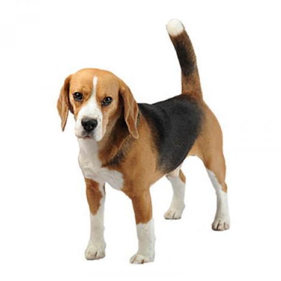

Beagle
| Weight: |
10-11 kg |
| Color: |
Many colors |
| Coat: |
Short-haired |
The beagle breed is a small scent hound, similar in appearance to the
much larger foxhound. The beagle was developed primarily for hunting
hare known as beagling. Possessing a great sense of smell and superior
tracking instincts, the beagle is the primary breed used as a
detection dog for prohibited agricultural imports and foodstuffs in
quarantine around the world. The beagle is intelligent and is a
popular pet due to its size, good temper, and a lack of inherited
health problems. The modern breed was developed in Great Britain
around the 1830s from several breeds, including the Talbot Hound, the
North Country Beagle, the Southern Hound, and possibly the Harrier.
Beagles have been depicted in popular culture since Elizabethan times
in literature and paintings and more recently in film, television, and
comic books.